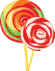

Guimauves
La guimauve, ou pâte de guimauve, est faite de sucre, de blanc d'œufs et de gélatine.
Ourson
Les Ours d'or sont constitués de sirop de glucose, de sucre, d'amidon, de dextrose ect...
sucette
Une sucette ou suçon au Canada francophone est une confiserie fixée au bout d’un bâtonnet.